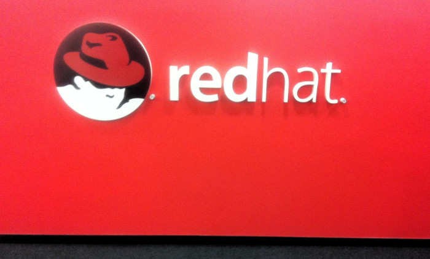
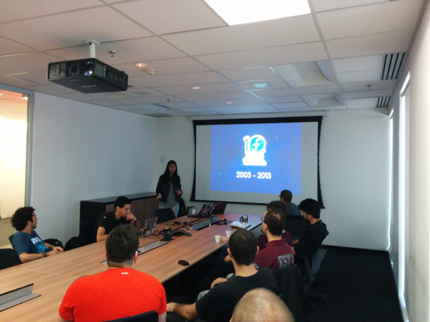
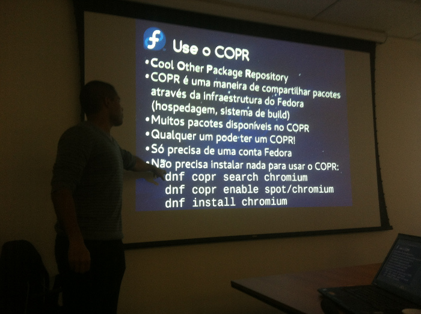
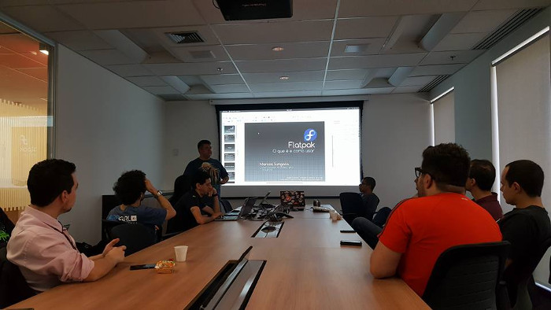
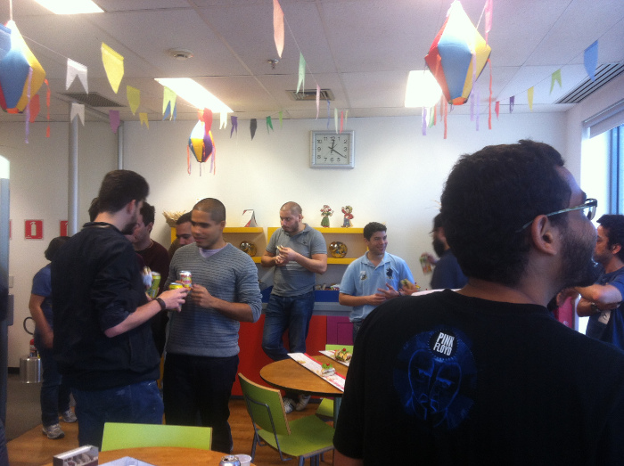
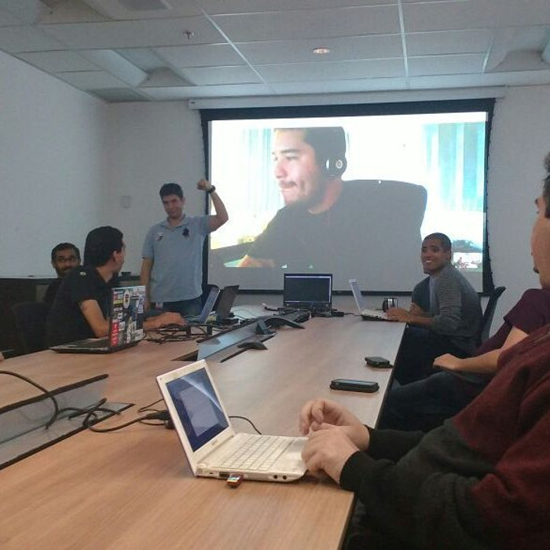
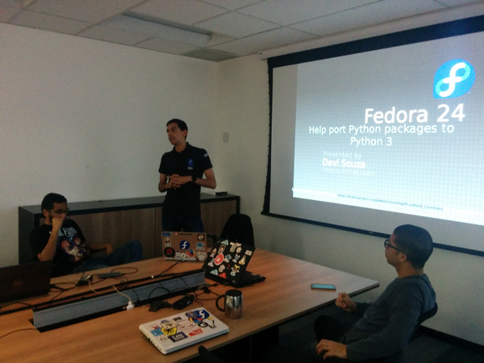
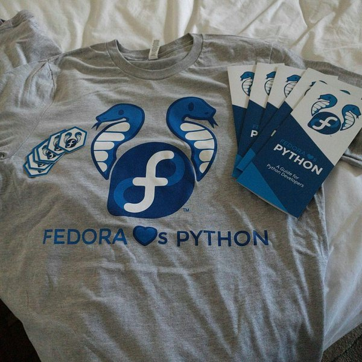
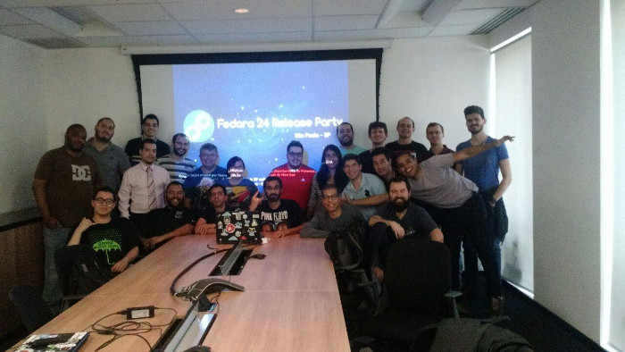

Every time a new Fedora release is available, the community organizes events around the world to celebrate. Those events are necessary because they help meeting other users, contributors and, of course, it's an opportunity to talk about Fedora.
This Saturday, it was time for São Paulo to make a Release Party. Athos Ribeiro, Ricardo Martinelli and myself invited Fedora users and free open source software enthusiasts to learn about Fedora 24, how to collaborate with the Fedora Project and how to use Flatpak. They could meet Fedora Cloud SIG and talk about Python with Fedora (Fedora loves Python <3)
The event happened at Red Hat Office's and about 25 people attended, filling the meeting room \o/ Unfortunately, the room can only support 36 people, but more than 120 were interested to attend, according to the Facebook Event. This clearly shows that São Paulo have a big FOSS public and that we need to organize more Fedora events here.

I started with a quick introduction about what is Fedora and our four values (freedom, friends, features and first). The majority of the public have used Fedora for a long time and so, many things like Fedora SIGs and how to contribute weren't news for them. After this, I tried to encourage people to create a wiki, greet everyone and introduce themselves via mail lists :) That was the first time I've talked about Fedora but in general I think it worked, because after Release Party new people joined "Fedora Brasil", a group in Telegram group. Lots of people have sent me a friend requests too, and some of them said "wow, the event was so cool!".

Athos collaborates with packages in the Fedora Project and talked about tips to use Fedora and about Fedora 24's news. He introduced COPR (Cool Other Package Repository) and solutions for common problems like wifi drivers and video drivers. The Python, NodeJS, GNOME updates and other updates were mentioned and the coolest thing about it was to see the difference between the old version and Fedora 24. Some people commented about their experience in upgrade and, with the exception of proprietary software, it was very easy.
Marcos Sungaila is a CTO in Savant, a consultant, a certified Red Hat Trainer and wrote the book "Autenticação Centralizada com OpenLDAP". He's an awesome person and taught us about Flatpak, a framework made to help with the installation of apps in different Linux distributions and versions. It's very easy to use Flatpak and Marcos showed it for us. Lots of questions about the infrastructure were made, and Marcos and Claudia Sungaila have shared all their experience with us.

Lunch time or yum yum, ops i mean dnf dnf

Daniel Bruno is mentor of the LATAM Ambassadors, via Hangouts he presented Fedora Cloud SIG and what they have done. Daniel emphasized too how Fedora Cloud is available in the most common services like OpenStack and Amazon EC2. Ricardo Martinelli is Senior Software Engineer at Red Hat and showed Openshift, a Container Platform and Atomic Developer Bundle.

For last, Davi Souza talked about Fedora infrastructure and Python SIG. A lot of Fedora's tools were developed using Python and there was a community effort to port everything from Python 2.7 to Python 3

This t-shirt was made for the Pycon 2016 and is now available in Brazil, if you have interest send a message in Telegram group

Thanks everyone, feel free to send me a message in danielamorais@fedoraproject.org and join us:
https://telegram.me/fedorabr

Useful links
Presentation
https://danielamorais.fedorapeople.org/f24.odp
Fedora 24 Release Party - São Paulo
http://athosribeiro.com/post/fedora24-rp-sp/
Fedora 24 Release Party
https://rimolive.github.io/aprendendo-cloud-computing/2016/07/fedora-24-release-party